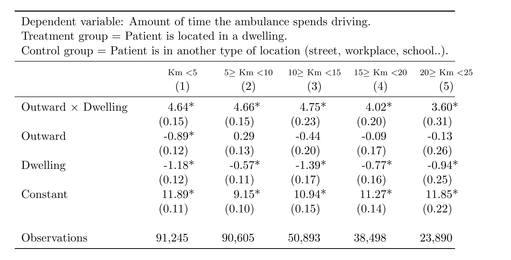

Dispatchers often receive imprecise addresses. Comparing the outbound trip (destination uncertain) with the return trip (destination known), on Liguria emergency data, isolates the time lost looking for the patient.
Extra driving time to reach a patient at home, by trip length (minutes)

Read the first row: whether the trip is under 5 km or over 20 km, finding a patient at home costs roughly 4 to 5 extra minutes. It is a fixed cost of locating the patient, not a matter of distance; for urgent missions it is about 5 minutes, +30% on driving time.
So whatBetter caller location (handset location, address validation, dispatcher protocols) is one of the cheapest ways to save minutes.